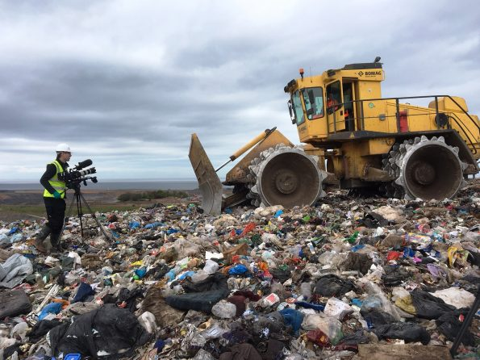

A modern technique for land disposal of solid waste involves construction and daily operation and control of so-called sanitary landfills. Sanitary landfills are not dumps; they are carefully planned and engineered facilities designed to control leachate and methane and minimize the risk of land pollution from solid-waste disposal. Sanitary landfill sites are carefully selected and prepared with impermeable bottom liners to collect leachate and prevent contamination of groundwater. Bottom liners typically consist of flexible plastic membranes and a layer of compacted clay. The waste material—MSW and C&D debris—is spread out, compacted with heavy machinery, and covered each day with a layer of compacted soil. Leachate is collected in a network of perforated pipes at the bottom of the landfill and pumped to an on-site treatment plant or nearby public sewerage system. Methane is also collected in the landfill and safely vented to the atmosphere or recovered for use as a fuel known as biogas, or landfill gas. Groundwater-monitoring wells must be placed around the landfill and sampled periodically to ensure proper landfill operation. Completed landfills are capped with a layer of clay or an impermeable membrane to prevent water from entering. A layer of topsoil and various forms of vegetation are placed as a final cover. Completed landfills are often used as public parks or playgrounds.
 Hazardous waste differs from MSW and C&D debris in both form and behaviour. Its disposal requires special attention because it can cause serious illnesses or injuries and can pose immediate and significant threats to environmental quality. The main characteristics of hazardous waste include toxicity, reactivity, ignitability, and corrosivity. In addition, waste products that may be infectious or are radioactive are also classified as hazardous waste. Although land disposal of hazardous waste is not always the best option, solid or containerized hazardous wastes can be disposed of by burial in “secure landfills,” while liquid hazardous waste can be disposed of underground in deep-well injection systems if the geologic conditions are suitable. Some hazardous wastes such as dioxins, PCBs, cyanides, halogenated organics, and strong acids are banned from land disposal in the United States, unless they are first treated or stabilized or meet certain concentration limits. Secure landfills must have at least 3 metres (10 feet) of soil between the bottom of the landfill and underlying bedrock or groundwater table (twice that required for municipal solid-waste landfills), a final impermeable cover when completed, and a double impervious bottom liner for increased safety. Underground injection wells (into which liquid waste is pumped under high pressure) must deposit the liquid in a permeable layer of rock that is sandwiched between impervious layers of rock or clay. The wells must also be encased and sealed in three concentric pipes and be at least 400 metres (0.25 mile) from any drinking-water supplies for added safety
Hazardous waste differs from MSW and C&D debris in both form and behaviour. Its disposal requires special attention because it can cause serious illnesses or injuries and can pose immediate and significant threats to environmental quality. The main characteristics of hazardous waste include toxicity, reactivity, ignitability, and corrosivity. In addition, waste products that may be infectious or are radioactive are also classified as hazardous waste. Although land disposal of hazardous waste is not always the best option, solid or containerized hazardous wastes can be disposed of by burial in “secure landfills,” while liquid hazardous waste can be disposed of underground in deep-well injection systems if the geologic conditions are suitable. Some hazardous wastes such as dioxins, PCBs, cyanides, halogenated organics, and strong acids are banned from land disposal in the United States, unless they are first treated or stabilized or meet certain concentration limits. Secure landfills must have at least 3 metres (10 feet) of soil between the bottom of the landfill and underlying bedrock or groundwater table (twice that required for municipal solid-waste landfills), a final impermeable cover when completed, and a double impervious bottom liner for increased safety. Underground injection wells (into which liquid waste is pumped under high pressure) must deposit the liquid in a permeable layer of rock that is sandwiched between impervious layers of rock or clay. The wells must also be encased and sealed in three concentric pipes and be at least 400 metres (0.25 mile) from any drinking-water supplies for added safety

Before modern techniques for disposing of hazardous wastes were legislated and put into practice, the wastes were generally disposed of or stored in surface piles, lagoons, ponds, or unlined landfills. Thousands of those waste sites still exist, now old and abandoned. Also, the illegal but frequent practice of “midnight dumping” of hazardous wastes, as well as accidental spills, has contaminated thousands of industrial land parcels and continues to pose serious threats to public health and environmental quality. Efforts to remediate or clean up such sites will continue for years to come. In 1980 the United States Congress created the Superfund program and authorized billions of dollars toward site remediation; today there are still about 1,300 sites on the Superfund list requiring remediation. The first listed Superfund site—Love Canal, located in Niagara Falls, N.Y.—was not removed from the list until 2004.